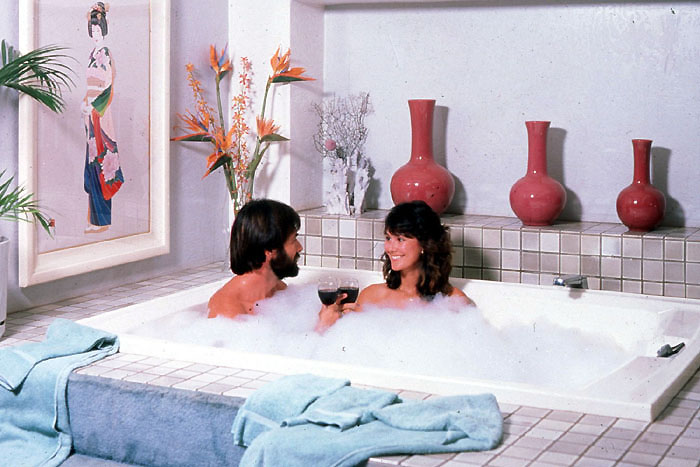

| Home / Dive Resorts / Live-Aboards / Snorkeling / Who We Are / Book a Trip |
© Copyright U.S. Dive Travel Network.
|
|
|
Founded by Erik Stein & Chris Millen, Extended Horizons offers a spacious custom-built aluminum dive vessel -- a 36-footer that caters to only 12 divers at a time -- ideal for clients who prefer a less-crowded scuba experience. Extended Horizons will depart for beautiful Lanai island most days at 6:45 am from Mala Wharf in Lahaina, near the old Cannery at the northern end of Old Lahaina Village. The dive guiding team run by Erik & Chris is one of the most amiable & professionally solid we have worked with in the Hawaiian Islands since the early 1990s. These guys will be big fun to dive with. Plus their divemaster team knows more than 60 classic Lanai dive sites, thoroughly. One neat fact here, the Mala Wharf is only a couple minutes easy drive downhill from Tanna's Maui Guest House. Super convenient location + you avoid all the Lahaina Village traffic. Like we always say -- "Here today, gone t' Maui !"
All lodging prices are subject to possible change & are per room / night + Hawaii state sales tax + USDT tariff:
|
|
|
HOW do we PICK the DIVE SITE of the DAY ? Based on preponderance of client calls, interest du jour in specific locales & weather + safety variables. We always find the best lee & the calmest waters the day will allow. Extended Horizon guides know Lanai like the back of their hands, after a couple decades of experience & countless hundreds of safe, successful charters. You will be impressed with their quiet competence, we are confident.
HOW DEEP do we DIVE EACH CHARTER ?
That varies each day, depending on desires of the majority of divers + their experience level. Most classic Lanai dives run from 60-70 feet, with many in the comfy 25-40-ft range. There are also many deeper dives available for more experienced adventure divers; just ask for what you need !
WHERE do we MEET EACH MORNING ?
All boat trips depart & return to the MALA WHARF in Lahaina, near the Cannery just north of Lahaina Village. Check-in time is normally 6:45 am for the Lanai diving departures & we return about noon, or shortly thereafter. For most afternoon dives, check-in is about 12:30 pm & we return to Mala Wharf about 3 pm daily. Night dives commence shortly before dusk & go for one tank, normally 2.5 - 3 hours including driving time to the pocket cove & shoreline prep time.
With WHAT KIND of DIVE BOAT will we be DIVING LANAI ? It's a solid, stable workhouse of a Maui scuba diving vessel, a 36-ft custom-built Munson Hammerhead Dive Tender, powered by twin 215 hp engines. This spacious Coast Guard certified dive vessel is rated for up to 21 passengers, but the dive guides seldom host more than 12 divers at a time, to keep the experience fresh & fun for all. There is a seasoned skipper + 2 guides + various crew members. The Extended Horizons has a freshwater system for rinsing yourself off + rinsing dive gear & cameras. There's a marine head + canvas sun cover + easy-to-use dive platform + 2 convenient side dive doors. Deck space for personal gear stowing is ample. Free refreshments are always provided: fresh fruits, cookies, chocolate bars, some bakery goods, juice & cold water.
WHAT ABOUT the NIGHT DIVES on MAUI ?
They are mainly shore dives that Extended Horizons guides will lead Mon, Wed, Fri & Sat for interested visitors. The pocket coves of West Maui, from Honolua Bay to Kapalua Bay + Black Rock & Mala Pier, offer some of the best night diving in Hawaii, with often placid water & moderate depths that mean ideal scuba diving conditions for extended bottom time, max client safety & good critter counts. Cost per diver = $99 for one tank + tax. Whenever possible, we accommodate single divers or even groups of reasonable size. All gear & lights are provided for this single-tank rate.
WHAT SORT of REVIEWS does EXTENDED HORIZONS GET?
From the beginning, strong reviews have poured in from all quarters. Extended Horizons dive guides have been lauded across the USA & overseas, in magazines & diving journals for their professionalism, friendly demeanor & straight-ahead savvy of the Maui diving scene. For example these magazines -- In Depth, Undercurrent, Aloha & Hawaiian Airlines -- have given Extended Horizons solid thumbs up reviews for years. Our dear buddy Tanna, owner of the Maui Guest House (easily the best-value luxury Maui Bed & Breakfast) swears by Erik Stein & his team. Tanna dives with Eric as often as she can, as does her circle of Maui friends. Tanna also sends scads of divers to Extended Horizons, season after season. Nuff said -- you're in good hands, funseekers, we vetted this gent carefully & Erik is a prince of a guy with a worthy boat & crew. His vessel might not be perfectly gleaming in the hull, but who cares about a scuff or two? Extended Horizons II is clean, safe, solid & roomy as all get-out. Perfect dive boat for adventure scuba divers intent on the best reef diving in Maui County -- off southern Lanai Island -- the coral gardens that remind us of olde Hawaii before the tourist flow began.
|
|
|
If you are looking for a primo Maui Bed & Breakfast, somewhere you can escape the pushy haole masses in the high-rise hotels of Hawaii, well look no further, amigos del mar. We have searched high & low for years & finally found the perfect Maui B & B, a Maui Bed & Breakfast that just knocked our socks off with its solid value, sweet-spirited service, excellent price & wide array of comfy amenities. Now we intend not a whiff of hyperbole, here. Finding a good hotel deal on costly Maui island is like discovering a great $3 sandwich in Manhattan -- virtually impossible. So we have tried the impossible anyway, & succeeded, we feel. In fact we almost do not want to print this, because the place already is running 75 - 85 % occupancy even 7-12 months out. We do NOT want to oversell this delightful Maui B & B. Nor does the laid-back owner, our friend Tanna.
This Maui Guest House is the most beautifully appointed & graciously managed Maui B & B we have ever had the pleasure to visit in Maui County -- meaning Lanai, Molokai & Maui islands. Every time we walk into this Maui bed and breakfast, we think, "Why didn't we know about Tanna's Maui bed & breakfast before?" We could just kick ourselves remembering all the long green we tossed away over the years, wrestling with tourist traffic in the heat of the day, enduring endless lines at NW Maui restaurants, sweating through long queues at check-in counters up in the pricier Ka'anapali Coast & Wailea sectors of West Maui. Tanna's Maui Guest House is a haven, a real Maui dive vacation getaway. This is a Maui B & B that delivers the goods at a price that will roll your dive boots up & down.
We think about going back to see Tanna, all the time, especially when workaday stress straps us to an office desk during manic peak seasons. Tanna's Maui bed and breakfast is a soul balm, a place for spiritual refreshment, for rekindling the spark in your marriage or the spring in your step. Tanna tells us that nearly half of her guests in recent years -- many on a Maui honeymoon for their first visit -- have returned to stay with her one or more times later on. That is the only statistic about a Maui B & B that matters. Did the clients have fun; did they enjoy some R & R, go back to the mainland feeling renewed & ready to re-tackle their city lives? That's our mission, folks. And it's Tanna's too. Refreshing the human spirit with the Big Blue, something bigger than us all.
What's more, Tanna is an experienced Maui divemaster & adventure tour guide. She even runs big full-vessel dive charters for us. Tanna handles them with conscientious skill & plenty of good humor.
In short, the Maui Guest House is a Maui bed & breakfast that stands apart from the commercialism that is creeping inexorably into Hawaii. Here is a chic yet surprisingly affordable way to beat the high cost of dive trips or snorkeling vacations on Maui. This lovely luxury home, right near Lahaina's scuba diving nexus, is one one of our best secret getaways on an island where vacation costs are spiraling into the ozone layer. You will be astonished at the high quality & low price of this Maui Guest House. Here is one of the best Hawaii honeymoon or Hawaii vacation bargains we have discovered since the early 1990s. If you are in the market for a Maui honeymoon, please feel free to give us a call & we will be happy to help.
OK, you probably sense a bit of Hawaiian punch -- maybe some extra zeal -- in our Maui article? Indeed, it's there, sunseekers. So why are we so stoked about this 1-2 combo of a little Maui bed & breakfast + a compact Maui diving operation?
First reason is the convenience. The Maui Guest House & the Extended Horizons dive operation are only a few quick minutes drive from each other & it's impossible for even the most heatstroked mainland haole visitors to get lost in north Lahaina, a tidy little village. You can drive downhill from Tanna's Maui B & B to the Mala Wharf in two flicks of a triggerfish tail, park right there & tote your dive bag only a few dozen feet to the dock. Hassle free diving with Erik's Extended Horizons team -- that's the ticket, amigos.
Second reason is sheer bang for the Maui vacation buck. The Maui Guest House offers a lush landscaped yard with colorful gardens, a large cedar surrounding deck + private circular swimming pool , 4 deluxe rooms, each with private hot tub & elegant private bathroom + lanai + TV-VCR-DVD + queen bed + full use of kitchen & laundry + free high-speed Internet access. There's all the wireless-fidelity (wi-fi) telecomm you need + free local phone calls from the community line near the "people's computer." Maui Guest House is nestled into one of the most peaceful old-fashioned areas in north Lahaina, only a couple blocks uphill from a decent public beach.
Third reason is our belief that good things come in small packages. We embrace a tropical adventure philosophy, proven over 30+ years of guiding scuba, climbing, hiking & photo tours around the world, that less is more, that treading lightly leaves the beach just as beautiful for the next guy & gal. That the best & brightest dive or lodging professionals in any island community are often the little guys with the big vision. We feel the real diamonds in the rough, the bona fide stars are often smaller outfits founded by passionate pros with decades of experience, sea-tested experts who are humble about their achievements, who march to a different drummer, & who labor not for a seat at the head table in a trade show, but for the sheer love of pleasing dive vacation clients in creative ways. This is precisely why we appreciate Extended Horizons & Tanna's Maui Guest House so much. That's why we recommend them without hesitation -- after spending good time getting to know them on Maui. We have devoted 17 Pacific crossings since 1990, encompassing more than 35 separate Hawaiian island visits over 59 weeks of actual onsite time -- free diving, scuba diving, hiking & inspecting properties -- methodically searching the Neighbor Islands for small properties run with a flair by consummate vacation industry pros like Erik & Tanna.
These folks are Maui's small-biz equivalent of a 100-acre organic farm. For them it's NOT all about the almighty dollar. It's about the quality of service, attention to details, conveying a sense of freshness & fun to new visitors. It's all about keeping their good name, attracting the same clients back year after year. These Maui professionals know their stuff, folks. And they are exceptionally nice about it, to boot. Ergo, what more do you need in a Maui dive package or Maui snorkeling vacation?
If you want to stay right on the West Maui waterfront, smack dab on a sandy beach, you WILL be surrounded on all sides by high-rises & mega-complexes of hotels or condos. There WILL be foot traffic galore & lines at every counter, day & night. If your Maui vacation requires a beachfront room, you WILL spend from the high $200s to the high $400s per night, double-occupancy, for a decent room. You WILL spend north of $85 - $120 per person per day for meals, drinks & a bit of entertainment. If you insist on a beachfront hotel room for your Maui vacation, you WILL face daily commutes of 45-70 minutes each way to the best dive op's, in terrific traffic during peak seasons. After more than 410 days of tooling happily about the Hawaiian Islands since March 1990, we flee those crowds with the same assertive zeal we would muster in the presence of swarming killer bees, or day-after-Thanksgiving shoppers. On a beautiful yet spendy-elite island, the Maui Guest House is far & away Maui's best lodging deal we know of -- anywhere in or around Lahaina -- which is West Maui's cultural nerve center. If you are looking for a Maui B & B that feels like home, then this is your Maui bed & breakfast, amigos del mar. Pure & simple. Just the way we've always liked it.
Conservatively speaking, you will save from $140 to $175 per night below the costly Ka'anapali & Wailea sectors of Maui, yet you'll still enjoy the same delightful creature comforts + swift access to Maui's well-known scuba diving experts at Extended Horizons. A dive op that's respected widely in Hawaii, Extended Horizons has a big boomin' power boat that cuts crossing time to under 35 minutes for the channel to Lanai. At least 3-4 times a week there are exciting morning trips from Maui across the big channel to dive at Lanai, the exclusive isle where Bill Gates was married years ago. (We were on Lanai a few days after that wedding; what a scene). For Maui scuba divers, Extended Horizons is a class act on the reef-rich isle of Maui. Their Maui diving guides are seasoned professionals with a strong sense of safety preparedness. We feel confident in sharing these services with vacationers who love Hawaii diving & Hawaii snorkeling as much as we have these last 15 years.

Each of 4 deluxe 4-star rooms offers a luxurious private Jacuzzi or hot tub.
Typical private room in Maui Guest House -- ideal for a Maui honeymoon or Maui diving vacation ...
MAUI NO KA OI�
( �
28 �REASONS �why �
AUNTIE �TANNA�S �
+ our
Comfy living room of the Maui Guest House near Lahaina.
Each of the 4 rooms also offers a restful private lanai, some w/ garden view.
Your Maui Guest House / Extended Horizons Package includes: Lodging in Lahaina's top value 4-star Bed & Breakfast + boat diving with Maui's most experienced dive operation to Lanai. Lodging sales tax of about 11.42 % (required by Hawaii Legislature) is extra. Meals, drinks, tips, tariff & air tickets also are extra package costs.
Clients of U.S. Dive Travel's Extended Horizons package will get free tropical munchies on the morning 2-tank trips to Lanai -- just another service of this smooth & personable operation. If you do get over to try some Maui diving, or Maui snorkeling be sure not to pass up the chance for some primo Lanai diving, among the best reef & archway environments in all of Hawaii. From Maui's western flanks to Lanai, this is one sweet spot in Hawaii diving, for certain, our 17 mainland-to-Hawaii trips (more than 35 separate island visits) to the Hawaiian Islands have proven since 1990.
Contrary to conventional wisdom, the best Maui scuba diving is NOT at
Molokini Crater, despite the great press that Molokini gets year after year. Molokini Crater
is to Maui as Mount Rainier is to Seattle: cool, close, imbued with legend. But everybody goes to both,
in fact thousands of good folks each year, so there are places where Maui County corals are a bit less,
shall we say, eagerly visited by the masses -- whether Maui snorkeling enthusiasts or Maui scuba diving guests.
Yes, Virginia, there's a lot more to Maui diving than this little croissant of brownish lava jutting from the Pacific Ocean. Sure the drift dives off the
back side of Molokini Crater are invigorating big critter encounters with some fun burly currents.
But both Maui divemasters & local watersport aficionados would agree that some of the best Maui scuba diving in
this sector of Hawaii is along the southern & southwestern
shores of Lanai island, a private island about 10 miles West of Maui. Lanai diving is
known for its dramatic undersea lava tubes, brilliant coralheads, pinnacles
& mysterious cathedral archways. To see the morning sun filtering through
the vaulted ceilings of these lava domes off Lanai, as hundreds of multi-colored
fish of many species flit every which way, is life at its best underwater. That's Lanai diving & snorkeling the way we always
remember it -- the lava soul of Hawaii diving.
After Niihau's leeward shore & Molokai's South Shore, diving southern
Lanai is the best part of the Hawaii diving spectrum -- in terms of abundant
coral & fish species, great lava seascapes, & surprises from rays
& whitetips to dancing eels & nudibranchs. In short, Lanai diving is really the best of
available Maui diving options, we feel. Maui honeymoon seekers who love to dive or snorkel, would be fully satisfied with this package, which we have vetted to the Nines, folks. Lanai diving is one really big reason; Tanna's home is the other.
|
|
|
|
|
|
|
|
|
|
|
|
Maui for years has posted among the highest hotel rates of all of the Hawaiian Islands, & for good reason. It has wonderful sights to offer, awesome beaches & it attracts an upscale crowd from the mainland. Many West Coast vacationers choose Maui over the other Neighbor Islands because it has so much to offer; thus the demand factor keeps prices high. That's why this package is the ideal way to sidestep West Maui's expensive hotels & still enjoy quality lodging with a Hawaiian "feel" to it, plus sweet-spirited service from Tanna's Maui bed & breakfast team & memorable scuba diving days with Extended Horizons.
You couldn't wish for a better Hawaii bed & breakfast location than the Maui Guest House offers. The hotel is a quick drive from the dive boat's wharf, & very close to Lahaina's beaches, harbor, dining, entertainment & fine art galleries. You never have to worry about a parking place at the Maui Guest House, either ! Sure, this Maui B & B is not on the water. But therein lies the exceptional value. Maui's expensive dive resorts are on the ocean, pure & simple. That makes Maui Guest House a kind of unsung gem on Maui, one of few really top-value economy hotels on this exorbitant island. Dive resorts do not need to be flamboyant to be great. Better to save at the Maui Guest House then spend the extra bucks on more scuba diving. Who needs a $300 - $400 / night room on Maui, when you're unconscious most of the time you're in it, anyway, right? (We mean, er, most of the time!)
At the Maui Guest House, our favorite 4-star property on the island, all rooms offer A/C & ceiling fan, cable TV & easy access to swimming pool. The Maui Guest House staffers truly serve you with the old-fashioned aloha spirit; & you'll feel right at home immediately. Tanna is an experienced Maui diving veteran as well, & her Maui Bed & Breakfast features large rinsing basins, gear-washing hose with a hefty flow, drying racks, gear storage lockers, everything a dedicated diving party would need to clean up & unwind after a good long diving day. There are a lot of dive resorts in the Hawaiian Neighbor Islands that are closer to the water, but few can match our Maui Guest House dive specials in total "bang for the buck" factor. Who cares about the 3-block drive to the waterfront, where the Extended Horizons vessels are moored? Helps get the old heart started for that pre-7 a.m. dive vessel departure.
The Maui Guest House gardens feature glorious sprays of red, white & yellow ginger plants, hibiscus & birds of paradise. Take a brief walk around & you'll feel your gritty city worries melting away. That's what Maui dive vacations are for, to enter the Stress-Free Zone ! And that's why every island we visit, whether Pacific or Caribbean, we actively seek out & cultivate professional relationships with dive resorts like the Maui Guest House.
Avoid the crazy commercialism of the tourist-glutted Ka'anapali Coast, & the exorbitant pricing of the Wailea area. This is the way to do Maui -- low cost, easy & hassle-free. You want scuba gusto that's close to the coast (West that is?), then go for Maui diving + Maui bed and breakfasts + Lanai diving = outstanding Maui dive vacations.
First gentle reminder funseekers, if any of these topics are of special interest to you -- Maui diving, Extended Horizons diving, Maui snorkeling, Lanai diving, Hawaii diving, Hawaiian Islands, the Maui Guest House, Maui B & B, Maui bed & breakfast, Maui honeymoons, Maui honeymoon, Lahaina or Maui scuba diving packages, then please be sure to call us any time & we are happy to help.
FOR MORE INFORMATION or RESERVATIONS:
Please feel free to contact:
John Hessburg, General Manager
Susan Hessburg, Operations Manager
U.S. DIVE TRAVEL Network
PMB 307 -- Suite # 116
15050 Cedar Ave. S.
St. Paul, MN, USA 55124-7047
Voice Mail: 952-953-4124
E-mail: divetrip@bitstream.net
Website: www.usdivetravel.com
IMPORTANT REMINDER about PRICES & TARIFFS:
All Maui Guest House dive package prices listed here are subject to possible change in this steadily evolving travel market. Lodging, side tour & diving prices are traditionally stable, while air prices can fluctuate daily. Until air tickets are issued, all airlines reserve the right to change airfares without notice -- an industry standard per FAA rules. We at U.S. Dive Travel will price-protect you to the utmost of our professional ability; & that has been our pledge for one decade now. Our tropical vacation experts normally secure excellent wholesale discount air tickets for our clients who book early enough to secure limited seats in the best price categories. Remember please, the federal government has deregulated all U.S.-based airlines, so only they control their pricing -- not any travel professionals. Early is good when seeking the best air ticket rates. Same holds for good rooms at Maui Guest House.
Unless specifically noted, these above scuba diving packages are prices for only the land-based portion of the dive resorts, in most cases reflecting double-occupancy rooms. International air tickets & commuter "island-hopper" seats are always extra above these land costs. Nominal service fees are also extra for air tickets & the vessel + side tour components. The baseline tariffs for all clients start at 7% per person for the land portion + $35 pp for the air tickets. Late-booking clients to any Maui vacation hotels may experience slightly higher tariffs on the lodging + diving at many of our dive resorts.
Including Maui Guest House, the preferred payment mode for all of our dive resorts, side tours & air ticket specials is by cashier's check or wire transfer in U.S. dollars. All clients living outside the USA or Canada will need to pay for their dive vacations via direct wire transfer only. No personal checks or credit cards will be accepted for the land portion of any reservation. Thank you for your gracious understanding. For Maui vacations, our service level is the highest & our prices the lowest in this industry, & thus we need to preserve a reasonable margin. For published-fare air ticket bookings, USDT always accepts Visa & Mastercard. For discount wholesale air tickets, USDT accepts only cashier's checks or wire transfers, please.
One more reminder sunseekers, if these topics are of keen interest to you -- Maui diving, Lahaina, Extended Horizons diving, Maui snorkeling, Lanai diving, Hawaii diving, Hawaiian Islands, the Maui Guest House, Maui B & B, Maui bed & breakfast, Maui honeymoons, Maui honeymoon or Maui scuba diving packages, then please be sure to call us any time & we are happy to help.
Be sure to stash away a little cash for this final moment at the airport, so you'll get your exit visa stamped quickly with no fuss; & away you go. Best of luck with your Maui scuba diving vacation & Maui snorkeling vacation plans. We hope your scuba diving vacation is a safe & satisfying adventure. Blessings & best wishes with all your Maui Guest House vacations.
Best fishes too!
>////*> <*\\\\<
John Hessburg & Susan Hessburg, Mgrs.
U.S. Dive Travel Network.
| Home / Dive Resorts / Live-Aboards / Snorkeling / Who We Are / Book a Trip |
© Copyright U.S. Dive Travel Network.